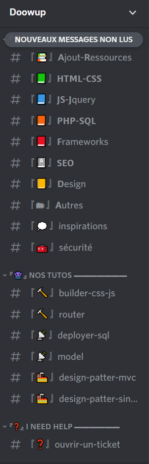
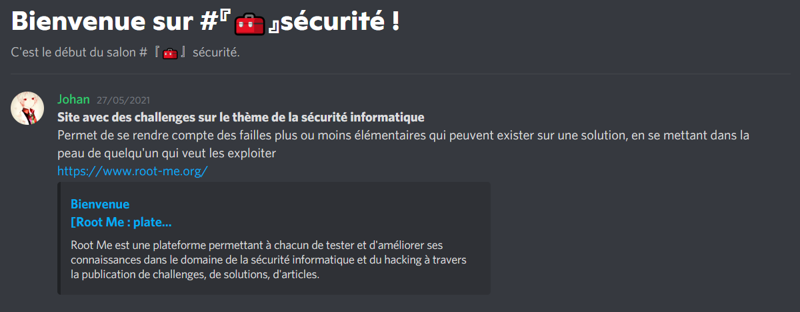
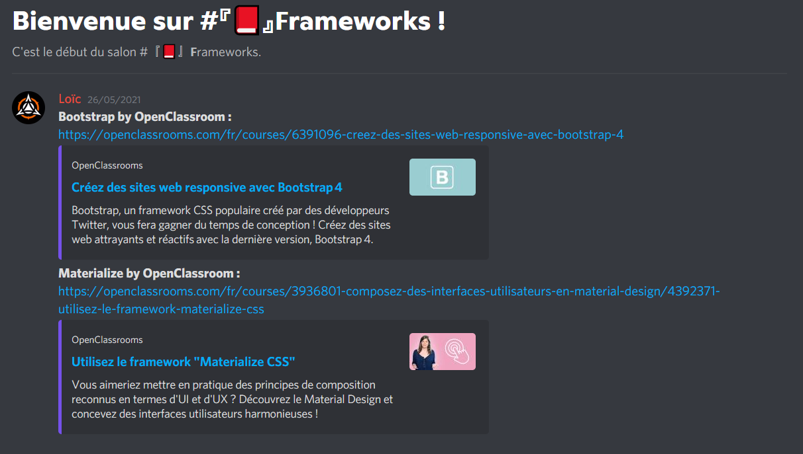
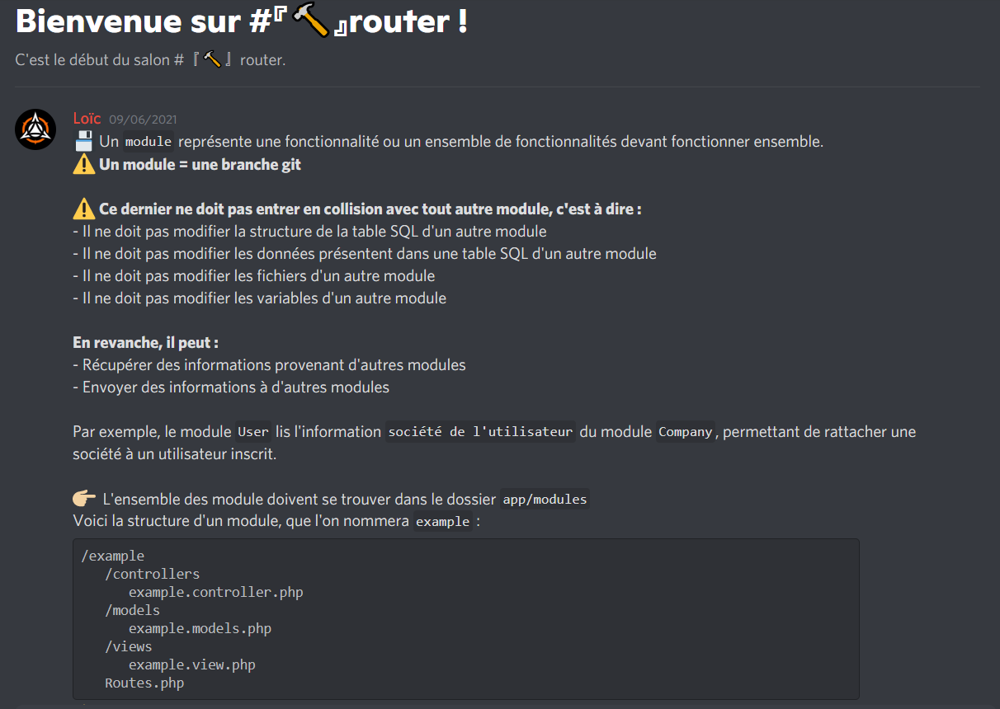
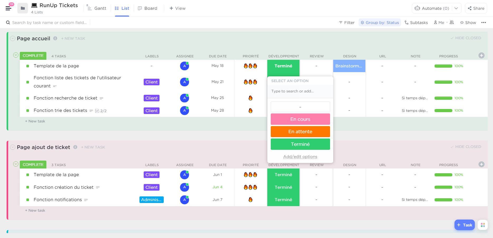
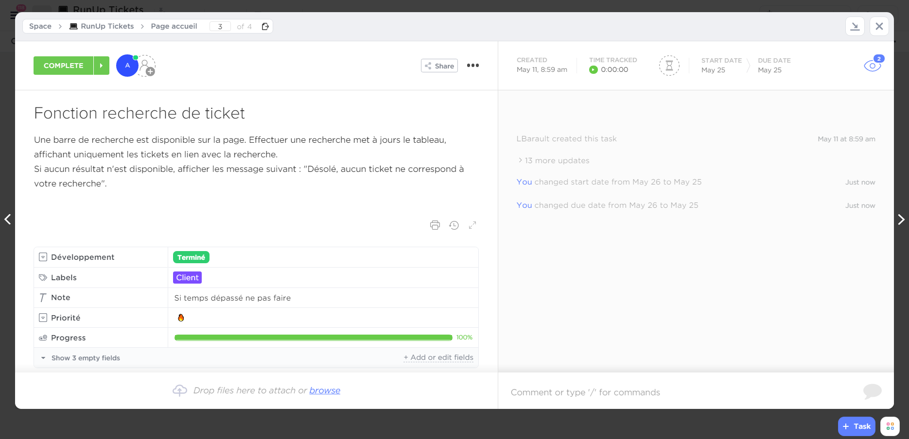
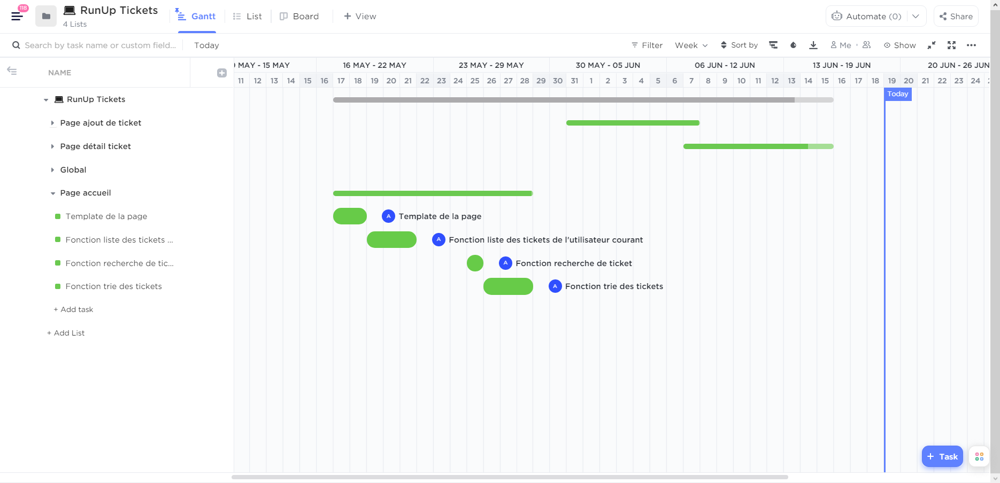
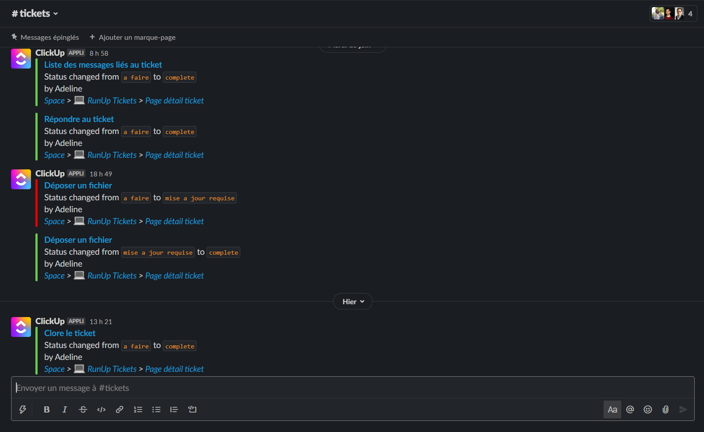
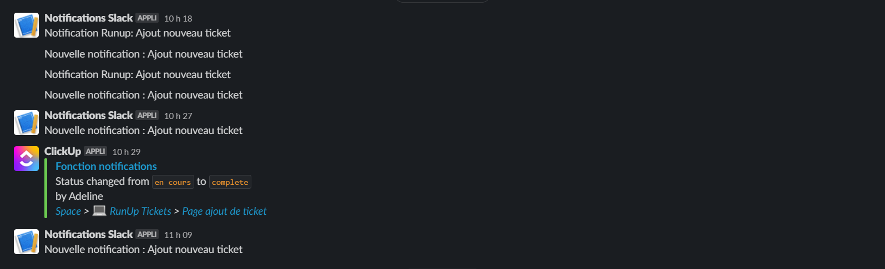
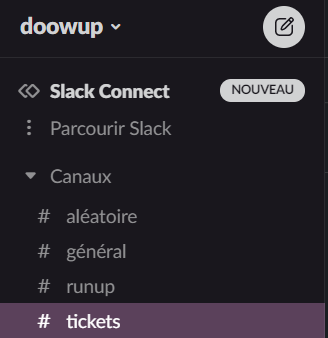

Documentation officiel :
Afin de prendre connaissance du projet RunUp et d'en cerner les besoins, j'ai eu à ma disposition
une documentation complète de la solution. Parmis les ressources, on y trouvait l'explication de
l'architecture MVC, un schéma de l'arborescence des fichiers, le modèle de données ainsi que les
spécifications fonctionnelles de chaque fonctionnalitées.
Maquettes Ticket avec Adobe XD :
J'ai eu la possibilité d'avoir à ma dispostion, des maquettes réalisés avec soins par mon tuteur.
Ces vues des différentes pages de la fonctionnalitée Ticket étaient bénéfiques et très utiles pour
savoir ce qui était précisément attendue.


Tutoriels Discord:
Au cours de ce stage, des tutoriels ont été mis en place sur Discord par les membres du projet
afin d'obtenir une aide plus complète du développement de la solution.




Planification des tâches avec ClickUp :
Chaque tâches étaient réparties en trois grandes parties, chacune correspondant aux pages de la fonctionnalitée ticket.
Elles disposaient toutes d'une date buttoir, d'un niveau de priorités plus ou moins élevé et pour certaine, une
description détaillé attendue de cette fonctionnalitée.
La diagramme de GANTT a permis d'éavluer le temps passé sur chaque fonctionnalitées.



Suivie de l'avancée avec Slack :
Pour chaque changement d'état d'une fonctionnalitée, une notifications était envoyé sur le serveur Slack du projet RunUp
afin d'informer le tuteur de mon avancée.



Au départ, il y avait des tâches prédéfinies et nécessaires au développement de l’application.
Au cours du développement, il y a eu des évolutions à la demande du client (Doowup) qui se sont
ajoutées et qui n'étaient pas présentes sur la maquette.
Exemple de ces évolutions :
- création du bar de recherche pour l'accès à des tickets spécifiques.
- création d'une selection sur l'état des tickets pour un accès ciblé.
- création d'une selection par date.